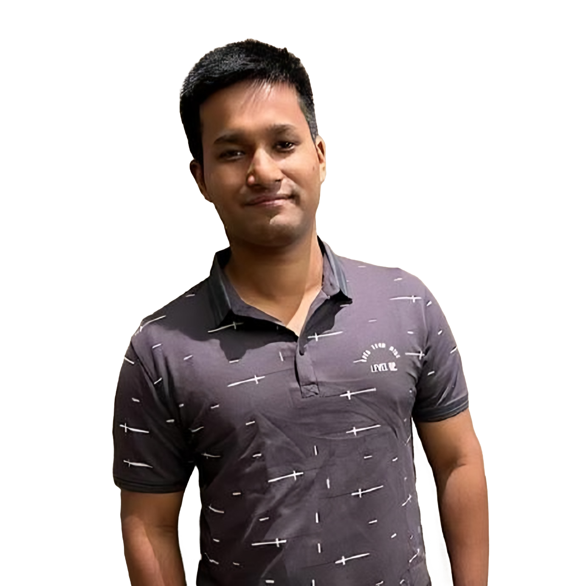
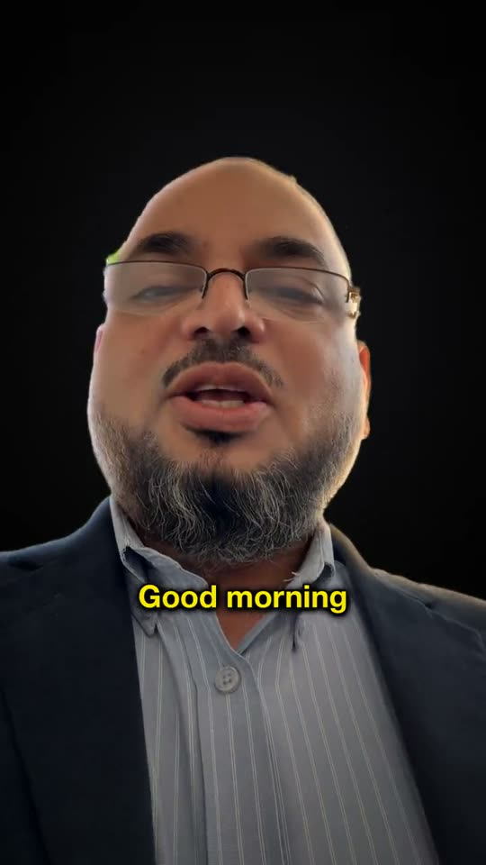
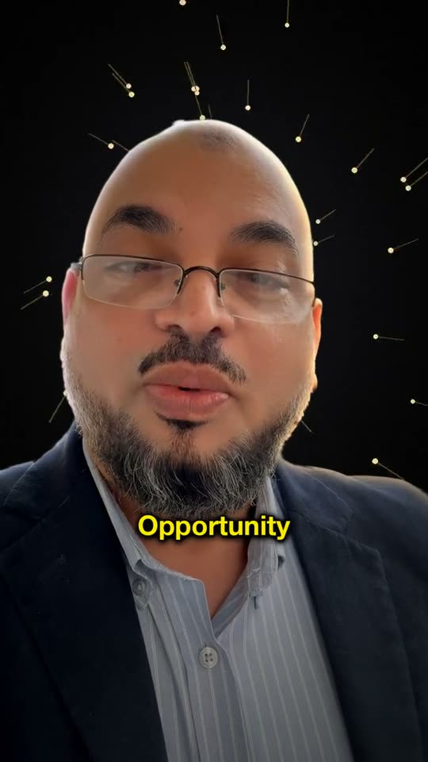
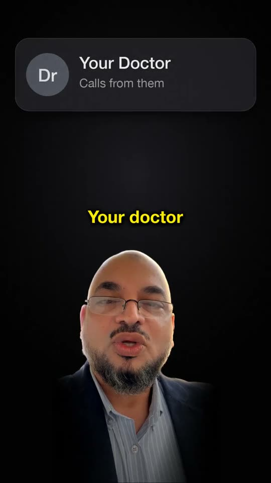
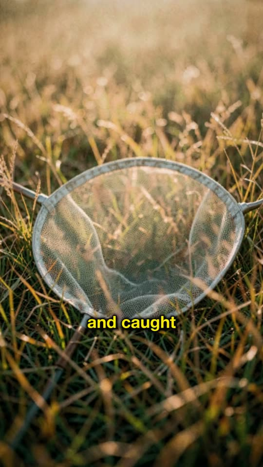
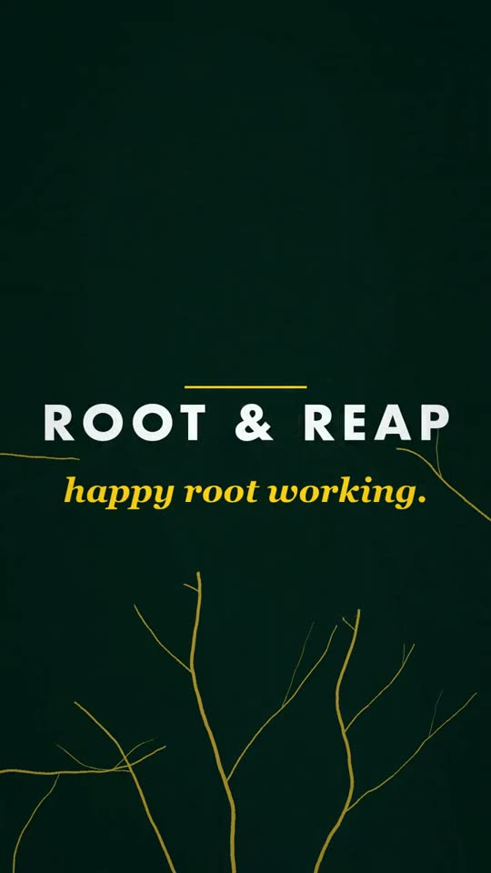

AI-native developer / Video editor / DesignerMumbai, 2026
Cut to measure.
I'm Siddharth, a studio of one with a crew of AI agents. I build software, edit short-form video and design personal brands, each made for the person paying for it.
An AI-native workflow: agents write, review and test. I decide what ships.
Siddharth PadwalSiddharth PadwalSiddharth Padwal
that's me, hi
Built with AI agentsAI-native workflow

Hello
Most founders hire a developer, an editor and a designer, then spend the week getting the three to agree. I do all three, and I do them the AI-native way: a crew of AI agents writes, reviews and tests alongside me, so the work gets finished fast.
Siddharth Padwal Mumbai, India. Working with clients worldwide.
agents.log
$ start three agents in parallel
writer builds the feature
reviewer reads every line of the diff
tester writes the tests and runs them
me decides what ships
how every build runs now
years shipping production software
7+
faster feature delivery since moving to agents
~40%
production releases in 11 months at SR Edu Technologies
67
automated tests behind CV Darzi
3,000+
episodes delivered of one daily series, Finding My 29
16
versions of one reel before the client signed off
28
Recent work for
Root & Reap
Cuffed Together
S3 Riders
IMK
SR Edu Technologies
Sportz Interactive
AI-native, start to finish
I now build everything with AI agents. They do the typing. I do the thinking, the reviewing and the deciding.
~40%faster delivery with agents
Agents in parallel
Claude Code, OpenAI Codex and Cursor run side by side on the same project: one writes, one reviews, one tests.
Design at build speed
Claude Design and Google Stitch turn a brief into working screens, so you choose from real options, not sketches.
Agents with real tools
I connect agents to browsers, databases and repos through MCP servers, and build a new server when a project needs one.
A human signs off
Nothing ships on trust. I read the diff, the tests run, and I decide. CV Darzi has 3,000+ automated tests behind it.
Software
Web products from first sketch to paying users, built with AI agents and reviewed by me. I own the frontend, the backend and the tests, and I stay until it is live.
test.cvdarzi.com
Creator and builder
CV Darzi
An AI tailor for CVs. It reads your CV and a job ad, quotes the exact sentence that is weak, and rewrites it from your own facts. You accept or reject every change, so nothing invented reaches the page.
Built solo with AI agents across 388 commits: product, design, code and the explainer videos
3,000+ automated tests and six QA testers before launch
Five AI providers with automatic fallback, so it stays up when one is busy
An AI-first email client. Gmail, Outlook and any IMAP mailbox in one inbox, with a one-line summary and a priority on every message. Installs as an app. Built with Claude Code.
The flagship school management system at SR Edu Technologies, used every day by admins, teachers and parents. I shipped 67 production releases in 11 months, including fee collection through four payment providers.
React, Laravel, Razorpay, PayU, Cashfree 2025 to now
Lead frontend
The EdChamps
The skill-learning platform for kids from SR Edu Technologies: abacus, Vedic maths and coding taught through video lessons, games and progress tracking. I work on its frontend.
Match centres, standings and fan games at Sportz Interactive for Gujarat Titans, Wisden and ECN Cricket, tuned for live updates under heavy traffic.
Vue, JavaScript, AWS S3 2024 to 2025
Senior associate
Reelio
A reel generator that runs entirely on a Mac. Give it an idea and it writes the script, casts recurring characters, draws every scene, narrates and cuts a 60 to 75 second vertical video.
Python, FLUX, Ollama, FFmpeg 2026
My own tool
Videos
Short-form video for founders and brands, from raw phone footage to the final export. I edit in code with AI tools, so every caption is timed to the word. Tap any reel to watch it with sound.
Root & Reap Stop chasing
One visual idea for every spoken line. The founder is cut out onto a black set, with yellow word captions at chest height.
Cuffed Together Finding My 29
A daily series, 16 episodes so far. A soft editorial look in the brand's colours, with a matching cover for every day.
S3 Riders Breakfast Ride
An event promo in Hindi. Phonk score, the rider cut out against his bike, and the giveaways shown as products.
Root & Reap 30 years, 3 lessons
Giant numbers behind the head, tally marks that strike through, and sound bars that collapse when the line calls for silence.
S3 Riders The comic cut
The same footage as a comic book. Clients get more than one direction, and they choose.
Root & Reap Transparency
The Monday format: a deep green set, single keywords in gold, and a voice-note waveform to open and close.
Root & Reap Diwali
The Friday format: the real room, large white captions with serif accents, and B-roll matched to each line.
Festive greeting Diwali message
A Hindi greeting from a single sofa take, with an English line under every caption and a row of lamps along the bottom.
Swipe, or use the arrows, to see all eight
IMK Don't blink
A 52-second intro built from kinetic type and photographs, cut to a timing sheet.
CV Darzi Explainer series
Seven product explainers rendered in code from real captures of the app, so they can be re-rendered whenever the product changes.
Timed to the word
Captions come from word-level transcripts, then get checked by ear. Nothing appears on screen that was not said.
Cut on the audio
Pauses are trimmed where the sound actually drops, never on a guess, so no word loses its tail.
Mixed for phones
Voices are cleaned and separated, music sits well under them, and the master lands near −14 LUFS.
Built to repeat
Each format is a template in Remotion and FFmpeg, finished in DaVinci Resolve. The next episode costs less than the first.
one reel, taken apart
How a reel is built
Keep scrolling. This is Root & Reap's "Stop chasing", layer by layer.





Cut on the audioI pick the best take of every sentence and trim pauses where the sound actually drops, so no word loses its tail.
Lift the speaker outThe founder is cut out and placed on a black set, lit so the face is the brightest thing on screen.
Time captions to the wordOne to three yellow words at chest height, switched on and off exactly when they are spoken.
One visual idea per lineEach line gets its own picture. When he says his doctor never calls, a phone card says it too.
B-roll that acts it outNatural-colour footage chosen to play the words, not to fill a gap.
Mix the sound for phonesThe voice is cleaned and separated, music sits well under it, and the master lands near −14 LUFS.
Close on the brandEvery Root & Reap reel ends on the same card: gold roots growing on deep green.
Personal brands
Portfolio sites and CVs for people who need to be hired, funded or booked. Written from your real record and designed around how you want to be seen. These three are live.